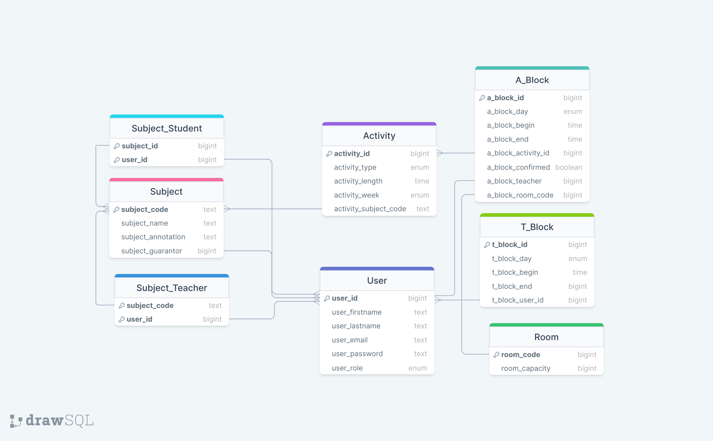

IS Plánování rozvrhů
- Autoři
- Štěpán Bárta
xbarta50@stud.fit.vutbr.cz -
Design, frontend, implementace pohledu rozvrháře, implementace výpisů předmětů, místností, uživatelů u admina
- Kryštof Paulík
xpauli08@stud.fit.vutbr.cz -
Tvorba a návrh databáze, implementace rozvrhu učitele a studenta, implementace volení času učitele
- Tomáš Valík
xvalik04@stud.fit.vutbr.cz -
Tvorba a návrh databáze, backend, implementace přihlašování uživatelů, implementace výpisu předmětů
- URL aplikace
- https://krystof-paulik.github.io/
Uživatelé systému pro testování
Uveďte prosím existující zástupce všech rolí uživatelů.
| s | s | Student |
|---|
| a | a | Administrátor |
| t | t | Garant |
| t2 | t2 | Učitel |
| r | r | Rozvrhář |
Video
https://youtu.be/XqxJelNThPQ
Implementace
Stručná dokumentace k implementaci, která popisuje, které části projektu (např. PHP skripty) implementují jednotlivé případy užití.
V projektu byl využit frontendový framework Angular, na backendovou část bylo využito čisté php.
Struktura projektu je dělena do dvou složek a využito návrhového vzoru MVC: adresář frontend - view, adresář backend- controller.
Každou tabulku databáze obsluhuje množina php skriptů v příslušném adresáři backendu.
Například adresář backend/user obsahuje create.php - vytvoření uživatele, deleteuser.php - smazání uživatele, edit.php - upravení uživatele,
getallusers.php - vrací záznamy všech uživatelů v databázi, login.php - přihlášení uživatele.
Databáze

Instalace
Spuštění aplikace
- Ujistěte se, že máte nainstalovaný Node.js a npm.
- Stáhněte si archiv se zdrojovými soubory a rozbalte jej.
- V terminálu přejděte do adresáře frontend.
- Spusťte příkaz npm install pro instalaci všech závislostí projektu.
- Ve složce frontend spusťte příkaz ng serve pro spuštění vývojového serveru.
- Otevřete webový prohlížeč a přejděte na adresu 'http://localhost:4200/' kde bude tato aplikace spuštěna.
Pozor! Tímto zprovozníte lokálně pouze frontend část. Ta komunikuje s backendem na školním serveru, který komunikuje se vzdálenou databází.
Pro zprovoznění backend části projektu lokálně pokračujte ve čtení.
Zprovoznění backend části
Po rozbalení je v souboru frontend\src\app\services\users.service.ts nakonfigurována url na školní stránku jednoho z nás.
Na této stránce jsou ty samé PHP skripty, jako ve složce backend\api.
Také v souboru backend\database.php nakonfigurováno připojení ke vzdálené databázi, kterou využívá i naše nasazená aplikace.
Pokud chcete použít spouštět skripty lokálně, můžete použít například XAMPP a postupovat následovně:
- Stáhněte si aplikaci XAMPP, nainstalujte a spusťte modul Apache stiskem tlačítka start.
- V souboru frontend\src\app\services\users.service.ts zakomentujte řádek č. 9 a odkomentujte řádek č. 10, případně upravte příslušnou url dle potřeby tak, aby odkazovala na složku backend\api.
- Nyní jsou volány lokální stažené skripty.
Pokud chcete použít i lokální databázi, můžete postupovat následovně:
- V již nainstalované aplikaci XAMPP spustťte modul MySQL.
- Otevřete webový prohlížeč a přejděte na adresu http://localhost/phpmyadmin/
- Zde spustťe skript database.sql dostupný ze složky backend\api
- Ručně přidejte uživatele s rolí admin.
- V souboru backend\database.php změňte údaje k databázi na vámi požadované údaje.
Známé problémy
Nelze odebírat učitele od předmětu, pokud už byl jednou přídán.
Přihlášený uživatel nevidí svoje jméno.
Z časové náročnosti, rozvrhář neumisťuje předměty do rozvrhu graficky, ale pouze vybírá ze seznamu.
U rozvrháře při hlídání kolizí není zohledněno sudý/lichý týden.